Criando e Editando Issues¶
Issues são espaços de discussão ligados a um repositório. Elas podem registrar bugs, dúvidas ou propostas de melhoria e permitem que responsáveis e colaboradores acompanhem o assunto.
Uma issue pode ser aberta por quem mantém o repositório ou por colaboradores, conforme as permissões e as configurações do projeto. A seguir, veremos exemplos de como participar dessas conversas.
Criando uma Issue Enquanto Colaborador¶
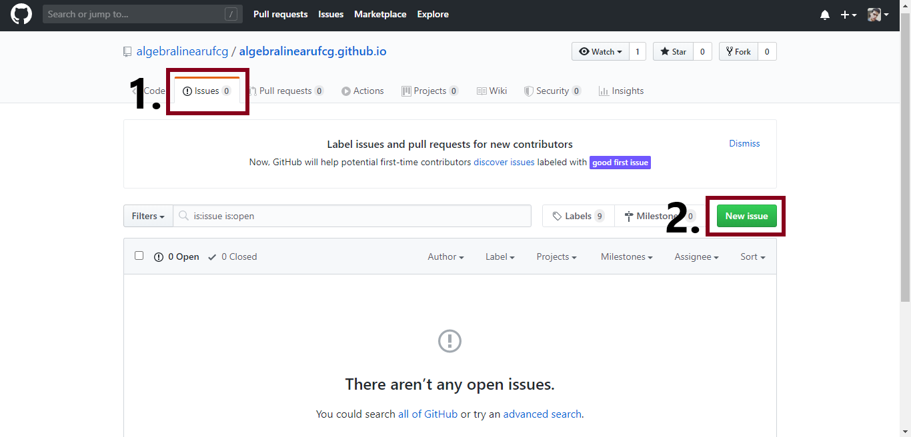
- Em um repositório que aceita contribuições, abra a seção de issues e escolha a opção para criar uma nova issue. A disponibilidade e os nomes dos controles dependem das configurações do projeto.
- Clique em "New issue" para fazer o seu comentário.
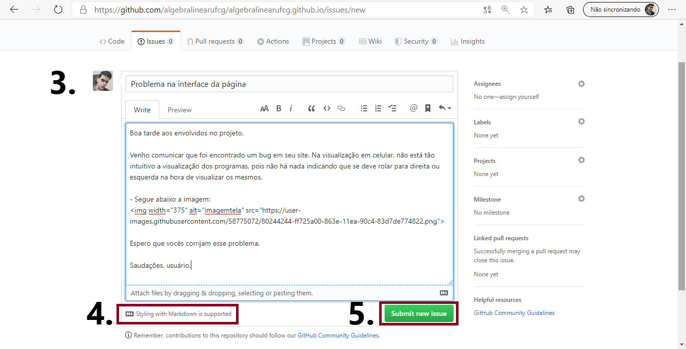
- Ao clicar em "New issue", você pode fazer seu comentário. Coloque um título e relate a sua mensagem com clareza.
- Issues aceitam Markdown, que também é usado para formatar arquivos como o README.md.
- Clique em "Submit new issue" para publicar o seu comentário.
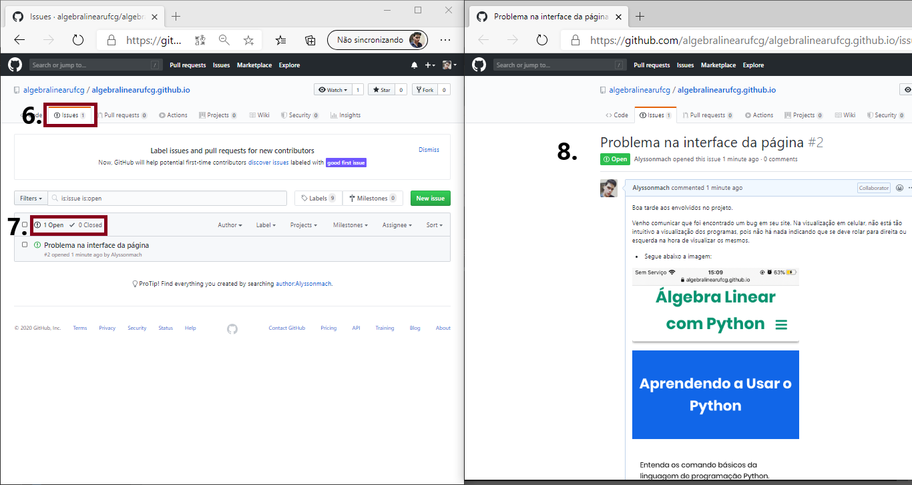
- A página do repositório lista as issues abertas. Elas podem permanecer abertas enquanto o trabalho estiver em andamento e ser fechadas quando o assunto for resolvido ou encerrado.
- Use os filtros e os rótulos disponíveis para acompanhar issues por status ou assunto.
- Ao abrir uma issue, você pode ler a conversa e, conforme as permissões do repositório, comentar ou reagir. Quem criou a issue também pode editá-la, se ainda tiver acesso.
Administrando issues no repositório¶
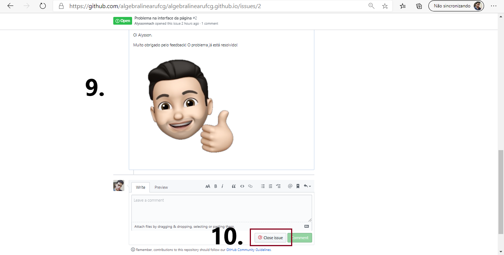
- Se você administra o repositório, pode responder à issue e fechá-la quando o assunto estiver resolvido ou não exigir mais acompanhamento.
- Quando o assunto estiver resolvido, feche a issue pelo controle correspondente. Os nomes dos botões podem variar conforme a interface.
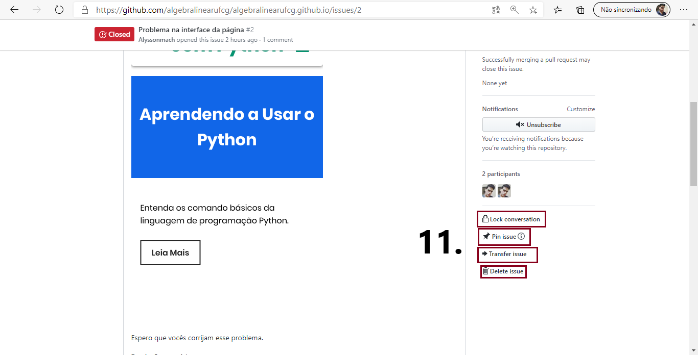
- Dependendo das permissões e das configurações do repositório, quem o administra pode bloquear novas interações, fixar uma issue, transferi-la para outro repositório ou excluí-la.
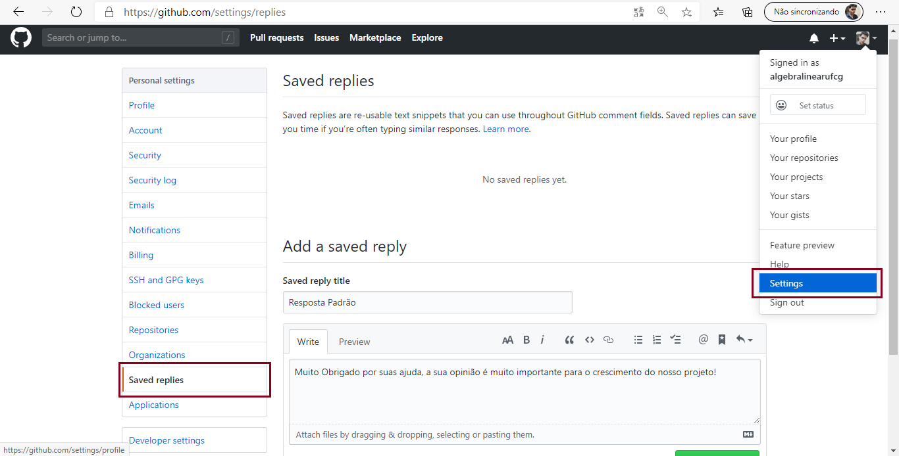
- Em algumas interfaces, é possível salvar respostas reutilizáveis nas configurações para responder a questões recorrentes.
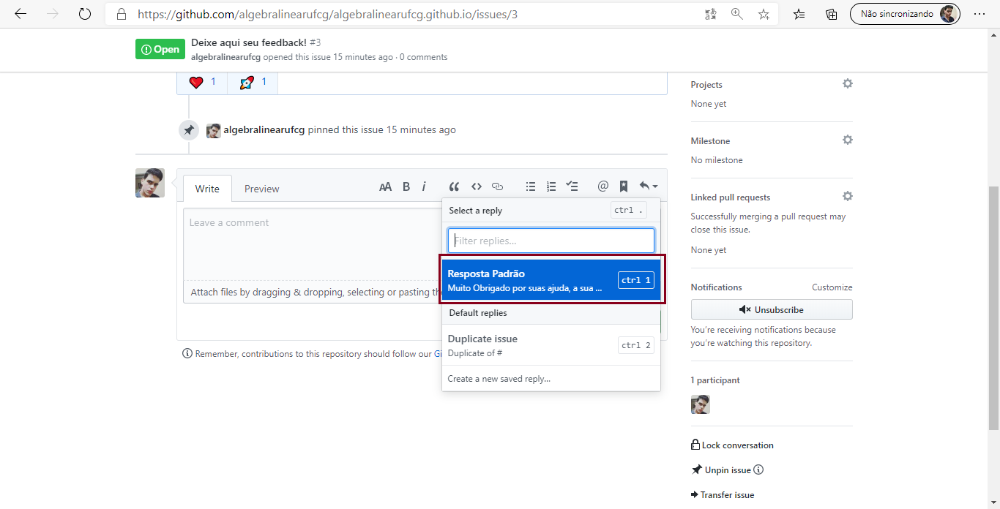
- Responda às mensagens com clareza e inclua informações que ajudem a pessoa a avançar.
Relatar um problema com clareza, compartilhar passos para reproduzi-lo ou sugerir uma melhoria pode ajudar a equipe a manter um projeto de código aberto.
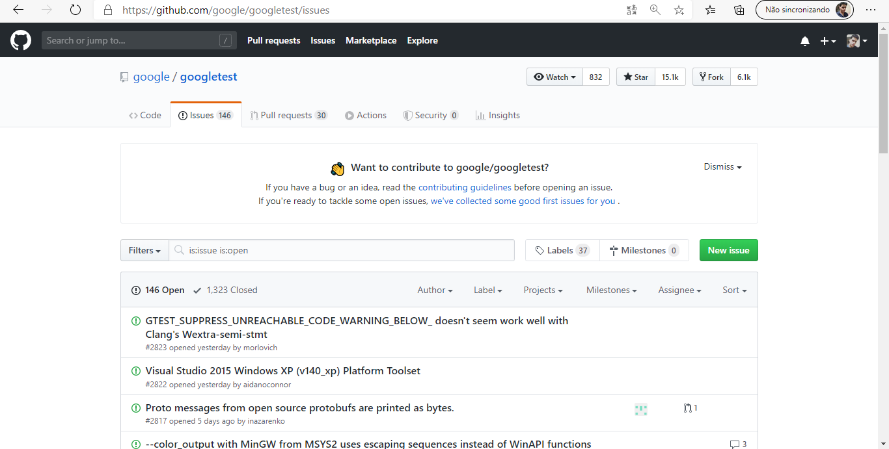
- Veja as issues abertas em repositórios públicos para observar como equipes descrevem problemas, discutem soluções e registram decisões.
Criando Forks¶
Um fork cria, na sua conta, uma cópia de um repositório. Você pode trabalhar nessa cópia sem alterar diretamente o projeto original e, quando estiver pronto, propor suas mudanças por meio de um pull request.
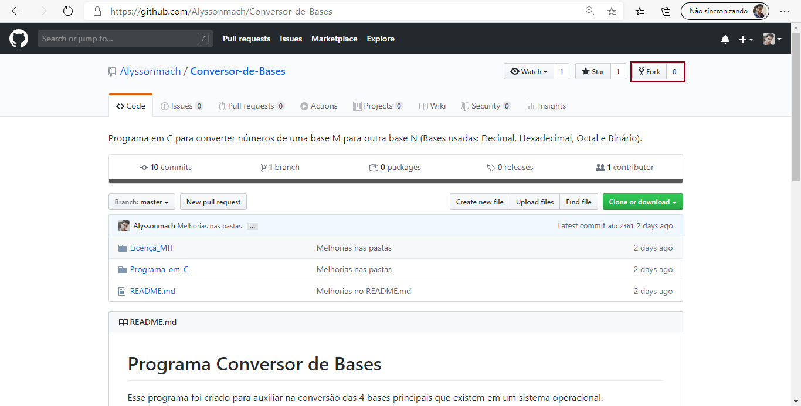
- Em um repositório de outra pessoa, use a opção de fork para criar uma cópia na sua conta. As permissões e a interface podem variar.
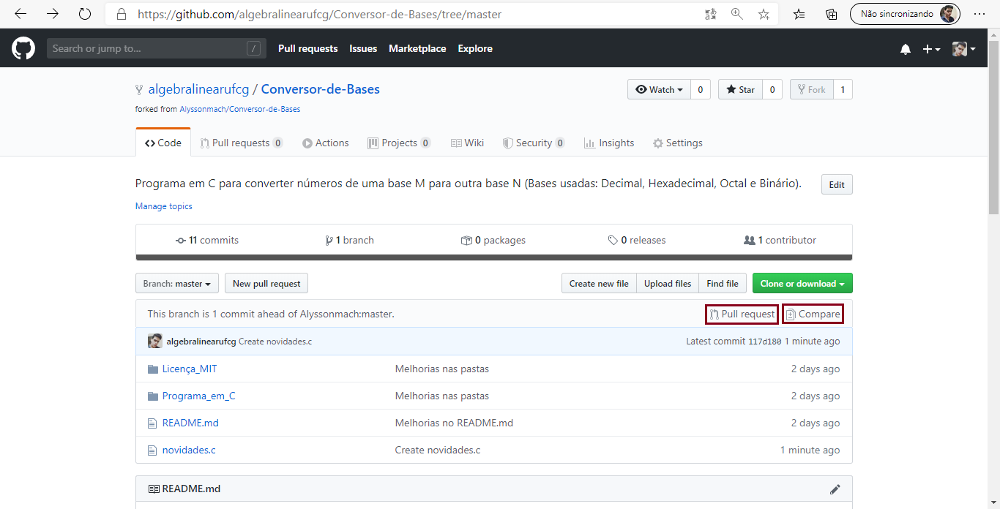
- Depois de criar o fork, você pode comparar suas mudanças com o repositório original e abrir um pull request. A equipe responsável poderá revisar a proposta, pedir ajustes e decidir se deseja integrá-la.
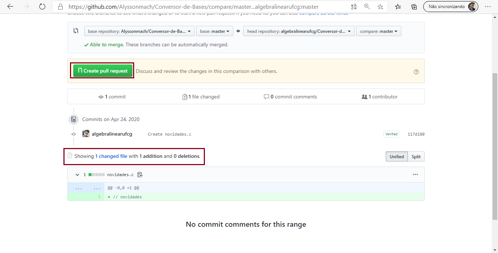
- Compare as mudanças da sua cópia com o repositório original. Quando estiver pronto, abra um pull request e descreva as alterações para que a equipe responsável possa revisá-las.
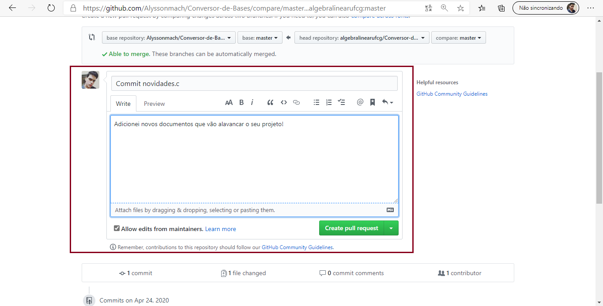
- No pull request, explique o que mudou e por quê. A equipe responsável poderá comentar, pedir ajustes e decidir se integra as alterações ao projeto.
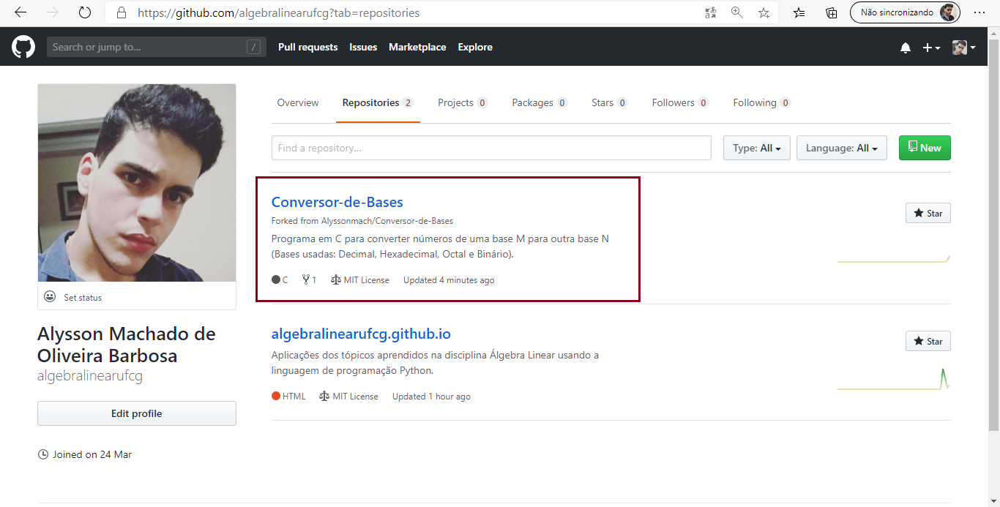
- Veja que o fork criado ficará na sua aba de repositórios, mas ele tem um símbolo na parte inferior que indica que aquilo não é um repositório seu, mas sim um fork de outro projeto.
Visualizando um Fork Feito no Seu Repositório¶
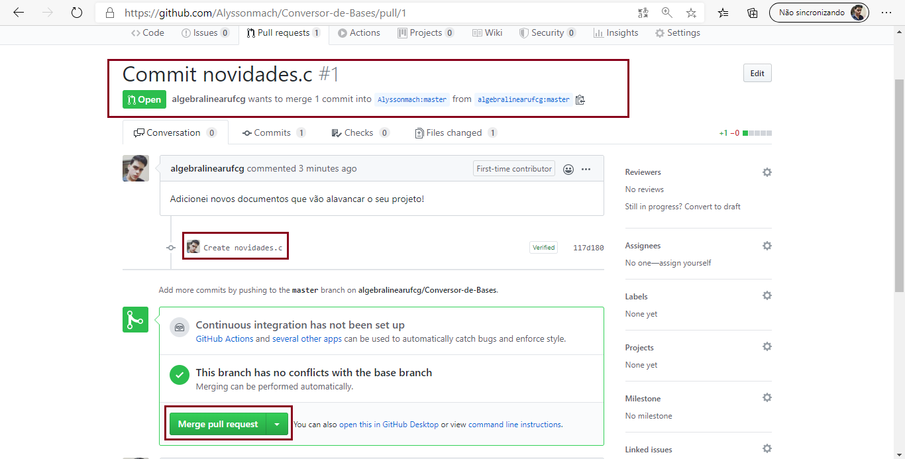
- A equipe responsável pelo repositório pode revisar o pull request e, se aprovar as mudanças, integrá-las ao projeto. A pessoa que propôs as alterações contribui para o projeto, mas isso não a torna automaticamente mantenedora.
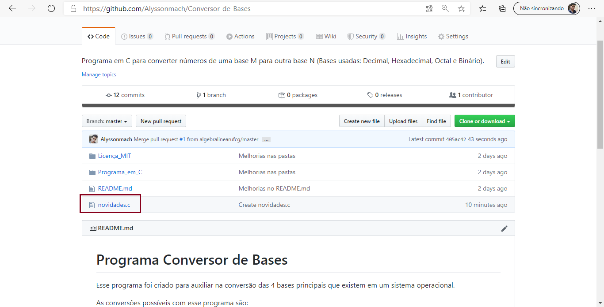
- Quando um pull request é integrado, as alterações passam a fazer parte do repositório original. O botão e a estratégia de integração podem variar conforme as configurações do projeto.
Próximos Passos...¶
Na próxima aula, vamos conhecer Markdown, uma sintaxe simples para formatar textos em documentos e em várias áreas do GitHub.
Está gostando do conteúdo? Compartilhe com seus amigos para que eles possam aprender também! Ajude a tornar a educação gratuita mais plural e democrática.